NAVIGATION
TOP of Page
MAIN Page
HOME Page
PREV Page
NEXT Page
PAINTED SILOS
Picola
Katamatite
Tungamah
St James
Devenish
Goorambat
WATERWAYS
Mulwala Canal
The Drop Hydro
Canal Drive
Dry Creek
RIVERINA SHIRES
Albury-Wodonga
Federation Council
Berrigan Shire
North-West
Campaspe Shire
Moira Shire
Shepparton G.C.
Benalla R.C.
Indigo Shire
Silos & Waterways
|
SILOS ART TRAIL
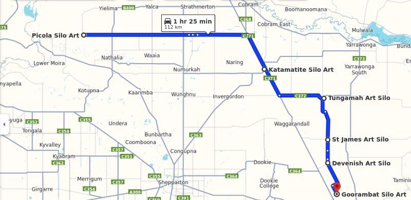
Map Of The Silos Art Trail
Picola, VIC on Moran St (Katunga-Picola Rd) was painted by Melbourne-based artist Jimmy
D'Vate. It features a magnificent depiction of the Superb Parrot, on a backdrop of the nearby
Barmah National Park and some of the native flora and fauna found in the region. In bygone days,
Picola was known as 'the hook' because it was at the end of the railway line.
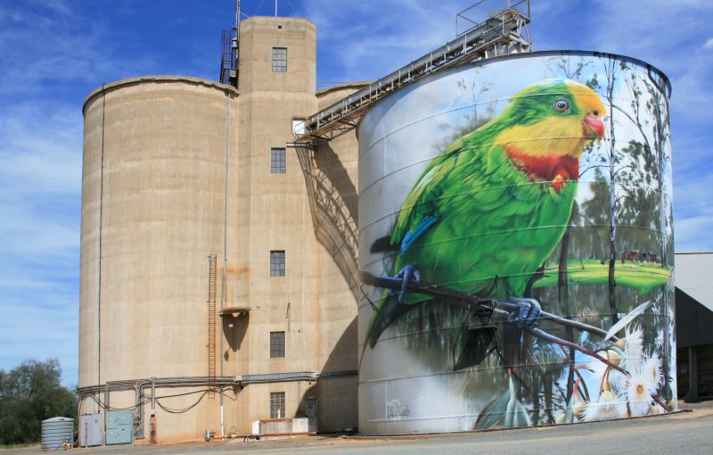
Picola Silos at 26 Moran Street / Katunga-Picola Road, Picola, VIC
TOP
MAIN
HOME
PREV
NEXT
Katamatite, VIC The GrainCorp Silos off the Katamatite-Nathallia Rd were painted by Tim
Bowtell. The silos hold a rich history, with memories of grain trucks lining up for delivery and grain
transport via the nearby railway line, which unfortunately no longer exists. The new silo artwork
showcases a Wedge Tailed eagle, symbolizing the connection to the metal eagle in the Lions Park
and paying homage to the traditional owners, the Kwat Kwat/Bangerang people.
The left silo portrays indigenous figures camped along the Boosey Creek, and a Scar Tree runs
down the center, connecting the two silos. The design also features local plants and rare
wildflowers. The top right showcases the first passenger train engine that serviced Katamatite in
its early settlement days. The bottom of both silos features a depiction of horses pulling a scoop to
create irrigation channels, which played a crucial role in opening up the region to farming.
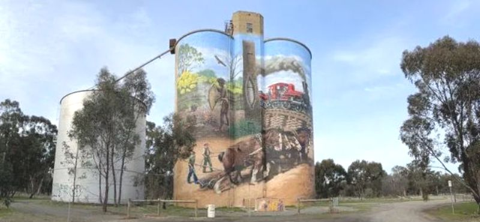
Katamatite Silos off the Katamatite-Nathallia Road, Katamatite, VIC
(c) Julie Ballard of Katamatite
TOP
MAIN
HOME
PREV
NEXT
Tungamah, VIC on Station St was pained by Sobrane Simcock from Broome, WA and was invited
to become the town’s artist. She has been painting huge silos and art walls all over the world. In
2018 it was decided by the Tungamah Kick-Start Committee to paint the magnificent silos of
concrete and steel. In 2019 the group joined forces with the the other five towns to create the
North East Art Trail.
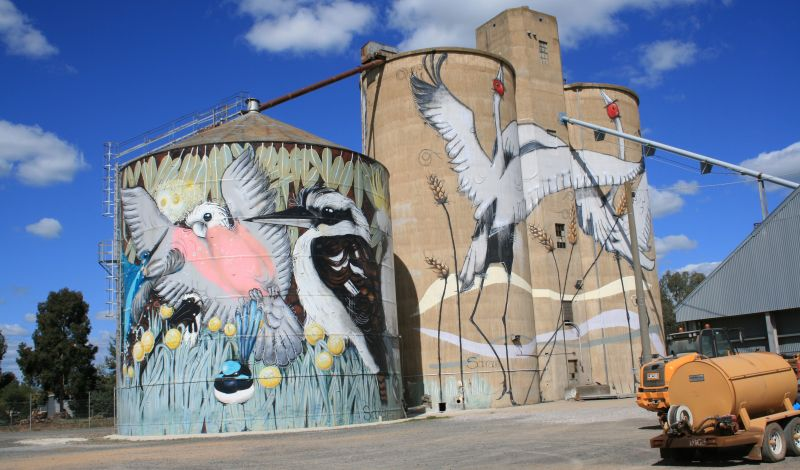
Tungamah Silos at Station Street, Tungamah, VIC
TOP
MAIN
HOME
PREV
NEXT
St James, VIC The GrainCorp Silos at 21 Devenish Road were painted by Tim Bowtell. The St
James Silos are officially the 27th set of silos to be included in the Australian Silo Art Trail
Collection. In 1882 George Coles Snr married his wife Elizabeth and purchased his first store at
the North Eastern St James.
He soon opened a second store four miles away in Lake Rowan. They traded mainly farming
equipment. Elizabeth and George's first son was born in 1885 and following tradition, they named
him George James. Tragically Elizabeth died in 1900 and in 1902 George sold his two stores and
moved to Geelong. The images on the silos reflect this history.
|
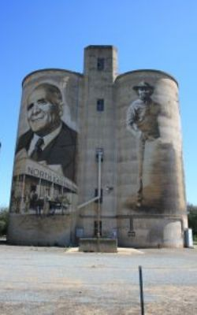
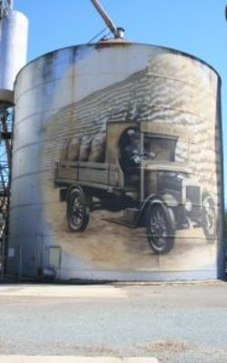
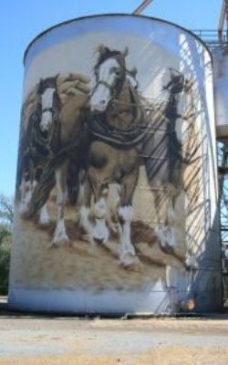
|
|
The Three Painted Silos at 23 Devenish Rd, St James, VIC
|
TOP
MAIN
HOME
PREV
NEXT
Devenish, VIC The GrainCorp Silos at 28 Main St were pained by Melbourne Artist Cam Scale and
are officially the 19th Silos to be included in the Australian Silo Art Trail. Stage one which
comprises of the two tall silos was officially unveiled on Anzac Day in 2018. Marked as a tribute to
help celebrate the 100-year centenary of the end of the First World War. The stage one artwork
depicts a stunning image of a WW1 nurse and a modern female military medic in the Australian
Armed Forces. This mural also depicts the changing role of women in the military and society in
general.
Stage two on the short silos were officially unveiled one year later on Anzac Day 2019. This mural
is a tribute to the Australian Light Horse. The Australian Light Horse were mounted troops with
characteristics of both cavalry and mounted infantry, who served in the Second Boer War & WW 1.
Fifty young men and women from the Devenish Community enlisted in the military services in
WW1. At the time, that was one in six residents from this very tiny town. Cam Scale also wanted to
honour the seven Devenish diggers that never made it home.
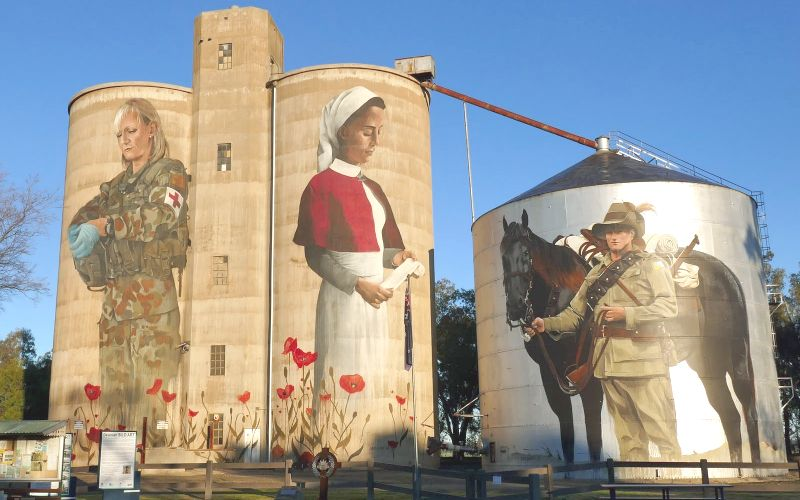
Devenish Silos at 28 Main St, Devensih, VIC
TOP
MAIN
HOME
PREV
NEXT
Gooramabat, VIC The Greaves family owned silos at Halls Rd were painted by Jimmy D'Vate.
Stage One 2018 - Jimmy Dvate was chosen to paint the tall concrete silo. Jimmy chose to feature an
endemic threatened species - Milli a Barking Owl who lives at the Healesville Sanctuary in Badger
Creek, Victoria. The Barking Owl is now considered to be an endangered species and there is said
to be only 50 breeding pairs currently living in the wild. A mural such as this and on such a grand
scale will now hopefully bring to light the current peril of this magnificent bird. Jimmy also painted
a farming scene on one of the short silos.
Stage Two 2019 - Jimmy returned to paint another short silo. It is a magnificent tribute to three
Clydesdale horses Clem, Sam and Banjo. Jimmy has captured the motion of these horses in gallop,
feathers flying on their feet as they travel side by side in harness, from an image taken by Bob
Britcher AFIAP AAPS PSQA in 2018 at the 100th Anniversary of the Clydesdale Horse Association
in Australia in Prenzlau.
 Goorambat Silos at 43 Halls Road, Goorambat, VIC
Goorambat Silos at 43 Halls Road, Goorambat, VIC
TOP
MAIN
HOME
PREV
NEXT
Link to Silo Art
Link to Silo Art
Link to Silo Art
Link to Silo Art
WATERWAYS
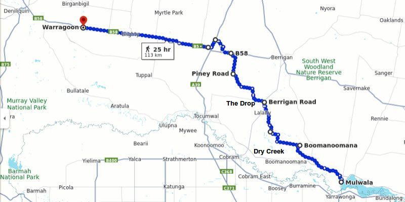
Map of the Waterways including The Mulwala Canal and Dry Creek
Mulwala Canal is 2,880 kilometres long and is the largest irrigation canal in the southern
hemisphere, spreading across the southern Riverina plain to Deniliquin and suppling water to
700,000 hectares. The Yarrawonga Main Channel is 957km long and services the Murray Valley
irrigation region, from Yarrawonga to Barmah. It supplies water to 128,000 hectares.
It begins in Lake Mulwala on the Murray River, extending north-west from Mulwala, through the
localities of Boomanoomana and Lalalty, diverting via the Berrigan Channel to Berrigan, and
continuing to Finley and eventually west to Deniliquin. Many bridges cross the canal on a mixture
of highways, tarred roads and dirt tracks. The canal is extremely wide, with a riverine appearance.
A special observation point can be made by travelling a few kilometres uphill on the rough
Sandfords Road after a turnoff from Draytons Road in Boomanoomana. At the top of the hill are
two quarries with a parking space. The views of the Mulwala Canal and the Mulwala No2 Channel
are spectacular. Do not attempt the steep decline on the road down to the bridge at the bottom.
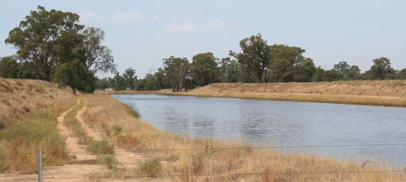
Mulwala Canal on Yarrawonga Road, Mulwala
The Drop Hydro-Electric Power Station is found in the centre of the shire at Lalalty on Berrigan
Road halfway between Berrigan and Barooga. Along the length of the Mulwala Canal is a a 6 metre
drop enabling a Hydro-Electric Power Station, generating 2.5MW - enough to power 1,500 homes.
It is the first Hydro-Electric Power Plant in Australia to be built on an irrigation canal.
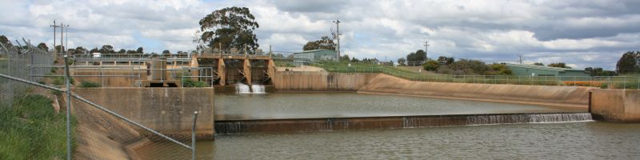
The Drop Hydro-Electric Power Plant on Berrigan Road at Lalalty
TOP
MAIN
HOME
PREV
NEXT
Mulwala Canal Sightseeing Drive is an approx 100km drive, taking about 2 hrs, across the shire
to view the various bridges crossing the Mulwala Canal from the source on Lake Mulwala to the
north-western corner near Finley. It is an ideal way to get a perspective of the peaceful rural
nature of the shire and the abundance of slow flowing, riverine irrigation canals.
Highlighting indicates a short drive to cross the canal or view a special scene. Do a U turn to
return back onto decent roads. This saves extended journeys on dirt roads.
Mulwala - heading south on Spring Drive/Corowa Rd, just 1km past the Tocumwal Rd Turnoff.
Cross Mulwala Canal, Turn Right onto Edward St, Turn Right onto Romney St,
Cross Mulwala Canal, Turn Left onto Barooga Rd, Turn Left onto Tocumwal Rd,
Cross Mulwala Canal, Turn Right onto Weymis Rd (dirt),
Cross Mulwala Canal, Do a U turn and recross the bridge,
Turn Right onto Tocumwal Rd, Turn Right onto Warmata Rd,
Cross Mulwala Canal, Do a U turn and recross the bridge,
Turn Right onto Tocumwal Rd, Turn Right onto Yarrawonga Rd,
Cross Mulwala Canal, Turn Left onto Draytons Rd
Turn Left onto Sanfords Rd (rough dirt) to drive south slowly and carefully uphill.
Stop at the the two quarries on the top of the hill and walk 20-50 metres south downhill.
Be selective for a viewing location due to the many trees beside the track.
View the spectacular junction of Mulwala Canal and Mulwala No2 Channel.
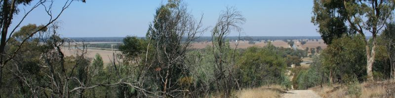
Sandfords Road, looking across Mulwala Canal and Mulwala No2 Channel Junction
DO NOT attempt to drive down the steep road to the bridge and canal at the bottom.
Do a U turn and head back north down the hill on Sanfords Rd.
Turn Left onto Draytons Rd, Turn Left onto Carramar Rd
Cross Mulwala Canal, Turn Left onto Draytons Rd, Turn Left onto The Coach Rd (dirt),
Turn Left (again) onto The Coach Rd (dirt), Turn Left onto Sanfords Rd (dirt),
Cross Mulwala Canal, Do a U turn and recross the bridge,
DO NOT attempt to drive up the steep road from the bridge.
This is the canal junction and bridge viewed previously from the quarries on the hilltop.
Turn Right onto The Coach Rd (dirt), Turn Right onto The Coach Rd (dirt),
Turn Left onto Carramar Rd, Turn Right onto back Barooga Rd,
Cross Mulwala Canal, Turn Left onto Nolans Rd (dirt),
Cross Mulwala Canal, Turn Left onto Womboin Rd (dirt), Turn Right onto Berrigan Rd,
Turn Left onto Melrose lane, Turn Right onto Sherwins Rd (dirt)
Cross Mulwala Canal, Turn Right onto Caseys Rd (dirt),
Cross Mulwala Canal, Turn Left onto Mardenora Drive (dirt),
Cross Mulwala Canal, Do a U turn and recross the bridge,
Turn Left onto Caseys Rd, Turn Left onto Piney Rd,
Cross Mulwala Canal, Turn Right onto Woolshed Rd, Turn Right onto The Riverina Highway,
Cross Mulwala Canal, travel to Berrigan,
Turn Right onto The Riverina Highway, Turn Right onto Berrigan Rd,
Cross Mulwala Canal at The Drop Hydro-Electric Power Plant in Lalalty
Proceed to Barooga, Turn Left onto the Mulwala-Barooga Rd and proceded to Mulwala.
TOP
MAIN
HOME
PREV
NEXT
Dry Creek
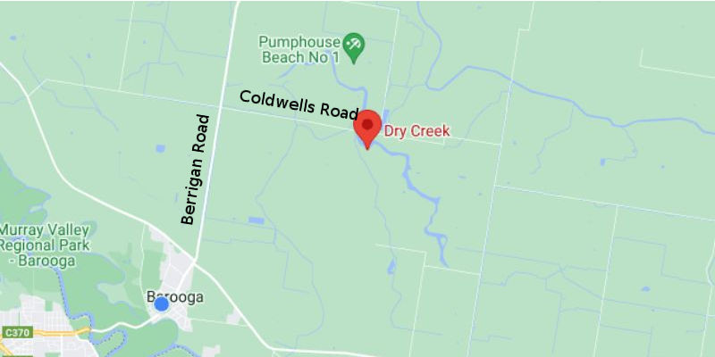
Map of Dry Creek
Dry Creek can be approached via the tarred eastern turnoff to Coldwells Road from Berrigan
Road. The first crossing is via a low causeway approximately 2.5kms along the road. A short
distance further is the southerly turnoff along the dirt Ennals Road, where another low causeway
crosses a U turn in the creek. The creek abounds with water birds wandering amongst the reeds.
This would be a delightful spot for a picnic.
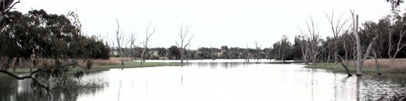
Dry Creek on Coldwells Road, Boomanoomana
Link Mulwala Canal
Link Mulwala Canal
Link Mulwala Canal
Link to The Drop
Link to The Drop
Link to Dry Creek
TOP
MAIN
HOME
PREV
NEXT
|